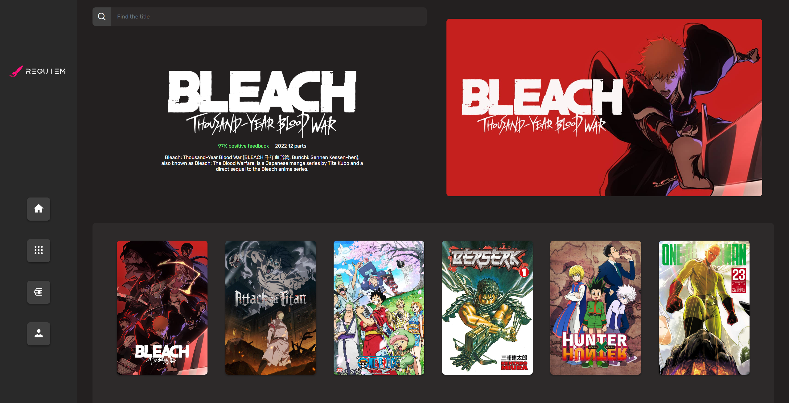
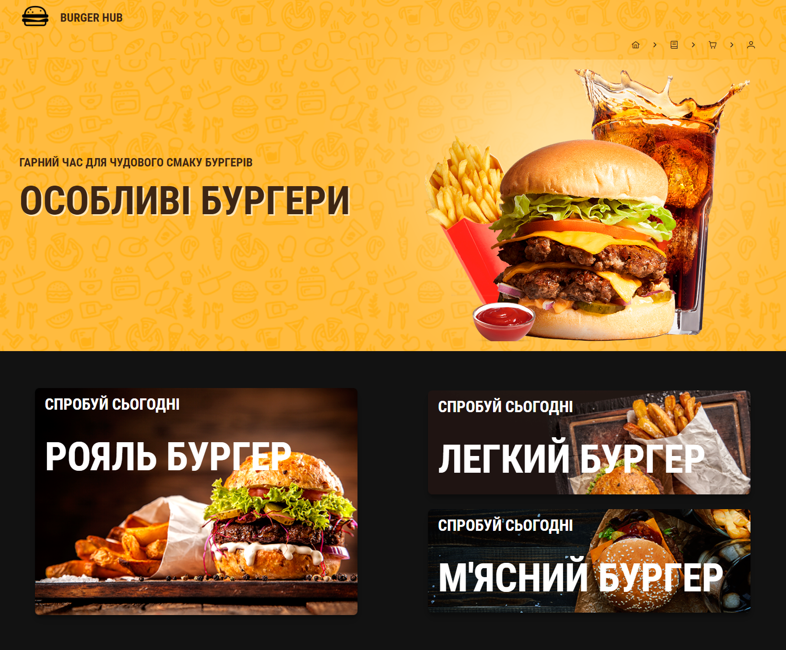
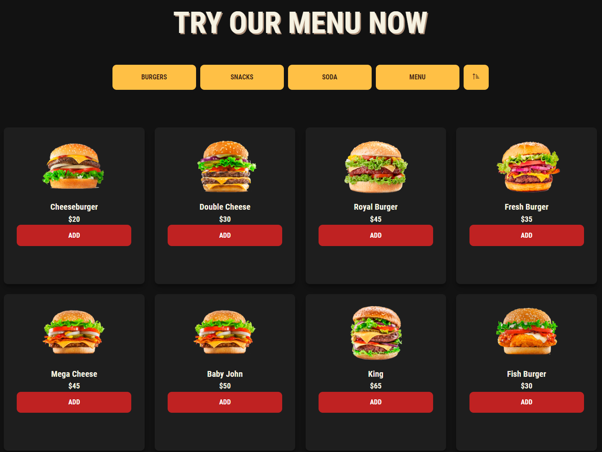

-
Project Requiem
Веб-застосунок для читання книжок/коміксів/манг онлайн. Застосунок передбачає регістрацію, пошукову систему, зручний читальний зал та особистий профіль для збереження улюблених сторінок.
Посилання на репозиторій: https://github.com/DenisRudiy/Project_Requiem.git
 -
Burger Shop
Веб-застосунок для створення онлайн замовлень. Застосунок передбачає регістрацію, оформлення замовлення, детальну інформацію про кожну страву, зміну мови та світлу або темну тему.
Посилання на репозиторій: https://github.com/DenisRudiy/Front-End-Learning.git
 
Рудий Денис
Web-developer
Мене звати Денис, я студент 3-го курсу Київського Національного Університету імені Тараса Григоровича Шевченка. Я повністю відданий вивченню і розробці веб-технологій. У мені вирує прагнення створювати дивовижні та інноваційні веб-додатки, а також розвиватися як професіонал у цій галузі.
Мої навички
-
HTML/CSS/JavaScript
У мене є глибоке розуміння веб-розробки, і я володію фронтенд-технологіями HTML, CSS і JavaScript. Моя здатність створювати креативні та чуйні веб-сторінки допомагає моїм проєктам виділятися. Також я володію навичками TypeScript та SaaS.
-
Angular/React
Я маю досвід розробки з двома з найпопулярніших фреймворків для виготовлення користувацьких інтерфейсів - Angular і React. Моя здатність створювати компоненти та взаємодіяти з API дає мені змогу розробляти масштабовані та високопродуктивні веб-додатки.
-
MySQL/PostgreSQL
Я гарно володію основними інструментами управління базами даних, таких як MySQL і PostgreSQL. Моє розуміння принципів реляційних баз даних дає мені змогу створювати ефективні та безпечні сховища даних.
-
Azure Cloud Services
Я знайомий з платформою Microsoft Azure і маю досвід розгортання та управління веб-додатками в хмарі. Моя здатність використовувати хмарні сервіси допомагає поліпшити масштабованість і доступність додатків.
-
Git/Jenkins
Я маю досвід використання системи контролю версій Git в команді. Це дає мені змогу кооперуватися з іншими розробниками та покращувати працездатність команди. Також я маю